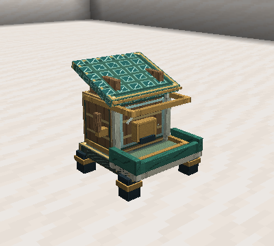

Care and Capture
Species and diets · Breeding · Companions
Feeding and needs
Use a food from the species' diet directly on a slime. An accepted meal consumes one item in Survival, reduces hunger by 20, and restores 10 energy. The slime must have at least 20 hunger and wait five seconds between meals.
Crouch and interact with an empty hand to inspect needs. Values range from 0 to 100: low hunger is good; high energy, comfort, and trust are good. Metabolism and habitat affect hunger and energy recovery.
Caretaker and trust
The first player to feed a slime manually becomes its caretaker. Other players may feed it, but do not take over the bond.
| Temperament | Trust per meal from caretaker | Trust required for capture |
|---|---|---|
| Docile | 20 | 20 |
| Neutral | 15 | 40 |
| Hostile | 10 | 70 |
Hostile slimes stop selecting their caretaker as a target at 20 trust. Bonded slimes reject damage attributed to their own caretaker or another slime with the same caretaker, including melee, projectiles, explosions, thorns, and indirect magic, without losing trust, absorption, or energy, retaliating, or starting a capture cooldown. Harmful caretaker and allied slime effects are rejected before poison or wither can deal delayed damage; healing and beneficial effects still work. This protection applies at any trust level and in every order. Other players, monsters, and unattributed environmental hazards such as lava and block fire can still hurt them. All mod slime species, wild or bonded, are immune to fall damage. A bond supports care and capture; training unlocks commands and cooperation.
Enclosures
Choose from the floor blocks and preferred biomes for all 47 species. Each species card in the gallery also lists its preferences.
The slime must stand on an accepted block: nearby blocks and walls do not count. Any accepted floor grants +35 comfort, while a preferred biome grants +30, added to a base target of 30. This gives 65 with the floor alone or 95 with both, before penalties. Different accepted blocks do not stack. Comfort adjusts by up to two points per loaded second.
Avoid overcrowding: more than eight evolution slimes in the local four-block check, including the slime itself, reduces the target by 20. Fire-immune species suffer a comfort penalty in water, rain, or bubbles; freezing-immune species suffer one while burning. Build barriers and roofs appropriate to the species. Habitat tags can be changed with datapacks.
Feeder

The Feeder has nine slots and supports hoppers. Every two seconds it tries to feed a hungry slime within four blocks and clear line of sight, using compatible food and respecting the individual's meal cooldown. It neither assigns a caretaker nor increases trust. Its reservoir and tray face you when placed.
Portable feeding
Use a feed bag to carry food for your own slimes in Follow within sixteen blocks. The Royal version has five slots; upgrade it with an Igneous Fragment for fifteen. Bags use each species' diet and the normal five-second meal cooldown, without granting automatic trust.
Capsules
Use an empty capsule on a size-1 or size-2 slime with sufficient caretaker trust, at least half health and 10 energy, no combat or damage in the last five seconds, and no leash, mount, or passengers.
Only the caretaker can capture and release it. Use an occupied capsule on solid, dry ground with free space. A rejected release keeps the slime in its capsule. Bosses and minions cannot be captured.
Capsules preserve identity, genes, health, age, trust, and cooldowns. The individual is suspended while captured. Losing its occupied capsule makes it inaccessible through normal gameplay. Captures belong to their original world: back up the entire world.
Recipes unlock after obtaining a slimeball. A second capsule recipe uses one Slime Core and one glass block. See materials.